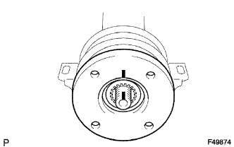
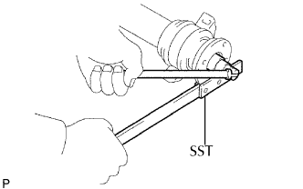
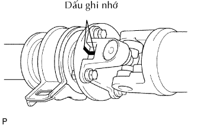

CỤM TRỤC CÁC ĐĂNG PHÍA SAU > LẮP LẠI |
| 1. LẮP CỤM TRỤC CHỮ THẬP KHỚP CÁCĐĂNG |
Bôi mỡ MP lên trục chữ thập mới và các ổ bi.
Lắp trục chữ thập lên nạng bích.
Dùng SST, lắp các ổ bi trục chữ thập vào trục chữ thập.
Dùng SST, điều chỉnh các ổ bi trục chữ thập sao cho: 1) nạng bích không vượt quá các rãnh phanh hãm của ổ bi trục chữ thập, và các rãnh càng rộng càng tốt: và 2) độ rộng rãnh của cả hai bên là bằng nhau.
Lắp 2 phanh hãm mới vào ổ bi trục chữ thập mới lắp vào. Các phanh hãm này phải có độ dày giống nhau để cho độ rơ dọc trục 0 đến 0.05 mm (0 đến 0.002 in.)
| Mã số | Độ dày | Dấu |
| 90520-T0007 | 2.19 mm (0.0862 in.) | F |
| 90520-T0008 | 2.21 mm (0.0870 in.) | G |
| 90520-T0009 | 2.23 mm (0.0877 in.) | H |
| 90520-T0010 | 2.25 mm (0.0885 in.) | J |
| 90520-T0011 | 2.27 mm (0.0893 in.) | K |
| 90520-T0012 | 2.29 mm (0.0901 in.) | 1 |
| 90520-T0013 | 2.31 mm (0.0909 in.) | 2 |
| 90520-T0014 | 2.33 mm (0.0917 in.) | 3 |
| 90520-T0015 | 2.35 mm (0.0925 in.) | 4 |
| 90520-T0016 | 2.37 mm (0.0933 in.) | 5 |
| 90520-T0017 | 2.39 mm (0.0940 in.) | 6 |
| 90520-T0018 | 2.41 mm (0.0948 in.) | 7 |
| 90520-T0019 | 2.43 mm (0.0956 in.) | 8 |
| 90520-T0020 | 2.45 mm (0.0964 in.) | N |
| 90520-T0021 | 2.47 mm (0.0972 in.) | 10 |
| 90520-T0022 | 2.49 mm (0.0980 in.) | A |
| 90520-T0023 | 2.51 mm (0.0988 in.) | B |
| 90520-T0024 | 2.53 mm (0.0996 in.) | C |
| 90520-T0025 | 2.55 mm (0.1003 in.) | D |
| 90520-T0026 | 2.57 mm (0.1011 in.) | E |
Dùng một búa, đóng nạng bích cho đến khi không có khe hở giữa các ổ bi trục chữ thập và các phanh hãm.
Gióng thẳng các dấu ghi nhớ trên nạng bích và khớp trượt.
Lắp các ổ bi trục chữ thập mới lên phía nạng trượt.
Thực hiện việc lắp các trục chữ thập khớp các đăng khác hãy dùng một quy trình giống nhau.
| 2. KIỂM TRA CỤM TRỤC CHỮ THẬP KHỚP CÁCĐĂNG |
Kiểm tra mòn hoặc hư hỏng của các ổ bi trục chữ thập.
Kiểm tra độ rơ dọc trục ổ bi trục chữ thập bằng cách quay khớp trong khi nắm chặt lấy trục cácđăng.
| 3. LẮP CỤM VÒNG BI ĐỠ GIỮA NO.1 |
Lắp vòng bi đỡ giữa vào trục trung gian.
|  |
Bôi mỡ MP lên lợi phần then hoa của trục trung gian.
Gióng thẳng các dấu ghi nhớ trên mặt bích khớp và trục trung gian.
Lắp đệm phẳng.
|  |
Dùng SST để giữ mặt bích, ép cụm vòng bi vào vị trí bằng cách xiết chặt một đai ốc mới.
Nới lỏng đai ốc.
Xiết chặt đai ốc một lần nữa.
Dùng một đục và búa, mở khoá đai ốc hãm.
|  |
Gióng thẳng các dấu ghi nhớ trên mặt bích và lắp các mặt bích bằng 4 vòng đệm và 4 đai ốc.